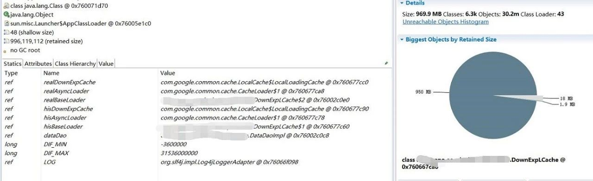
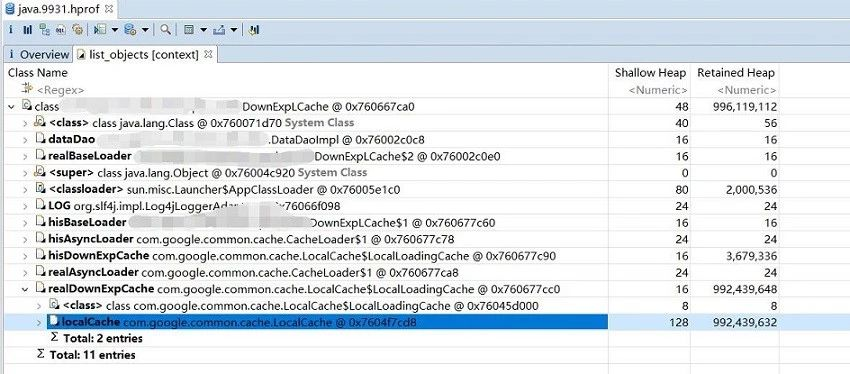

jmap主要用于打印指定Java进程的共享对象内存映射或堆内存细节.
jmap 使用帮助
jmap自带使用帮助 jmap -h 直接输出各个参数选项的使用方式.主要包含-heap,-histo,-dump,其中的-histo和-dump都都可以跟着live子选项,使用live去执行的话会先进行一次full gc,然后再输出gc后结果,所以在线上环境慎用.
Usage:
jmap [option] <pid>
(to connect to running process)
jmap [option] <executable <core>
(to connect to a core file)
jmap [option] [server_id@]<remote server IP or hostname>
(to connect to remote debug server)
where <option> is one of:
<none> to print same info as Solaris pmap
-heap to print java heap summary
-histo[:live] to print histogram of java object heap; if the "live"
suboption is specified, only count live objects
-permstat to print permanent generation statistics
-finalizerinfo to print information on objects awaiting finalization
-dump:<dump-options> to dump java heap in hprof binary format
dump-options:
live dump only live objects; if not specified,
all objects in the heap are dumped.
format=b binary format
file=<file> dump heap to <file>
Example: jmap -dump:live,format=b,file=heap.bin <pid>
-F force. Use with -dump:<dump-options> <pid> or -histo
to force a heap dump or histogram when <pid> does not
respond. The "live" suboption is not supported
in this mode.
-h | -help to print this help message
-J<flag> to pass <flag> directly to the runtime system
jmap -heap
输出的内容包括两部分 1. Heap Configuration : JVM启动堆大小的配置,为启动中配置的参数或者是根据系统内容默认出来的 2. Heap Usage : 堆各个分代或者内存区块的总大小和使用情况
例如我有个25477进程,输入 jmap -heap 25477 则输入如下
Attaching to process ID 25477, please wait...
Debugger attached successfully.
Server compiler detected.
JVM version is 24.80-b11
using parallel threads in the new generation.
using thread-local object allocation.
Concurrent Mark-Sweep GC
Heap Configuration:
MinHeapFreeRatio = 40
MaxHeapFreeRatio = 70
MaxHeapSize = 1073741824 (1024.0MB)
NewSize = 536870912 (512.0MB)
MaxNewSize = 536870912 (512.0MB)
OldSize = 5439488 (5.1875MB)
NewRatio = 2
SurvivorRatio = 8
PermSize = 134217728 (128.0MB)
MaxPermSize = 134217728 (128.0MB)
G1HeapRegionSize = 0 (0.0MB)
Heap Usage:
New Generation (Eden + 1 Survivor Space):
capacity = 483196928 (460.8125MB)
used = 212745000 (202.88944244384766MB)
free = 270451928 (257.92305755615234MB)
44.02863256614082% used
Eden Space:
capacity = 429522944 (409.625MB)
used = 203633784 (194.20030975341797MB)
free = 225889160 (215.42469024658203MB)
47.409291364886904% used
From Space:
capacity = 53673984 (51.1875MB)
used = 9111216 (8.689132690429688MB)
free = 44562768 (42.49836730957031MB)
16.975106599130036% used
To Space:
capacity = 53673984 (51.1875MB)
used = 0 (0.0MB)
free = 53673984 (51.1875MB)
0.0% used
concurrent mark-sweep generation:
capacity = 536870912 (512.0MB)
used = 277557408 (264.6993713378906MB)
free = 259313504 (247.30062866210938MB)
51.69909596443176% used
Perm Generation:
capacity = 134217728 (128.0MB)
used = 48057608 (45.83130645751953MB)
free = 86160120 (82.16869354248047MB)
35.805708169937134% used
17927 interned Strings occupying 1892528 bytes.
虽然能够看出堆内存的情况,但是它只是瞬时的状态,没办法观测到持续的情况,对比下之前的jstat -gcutil 在持续观测gc上面是没什么优势的.
jmap -histo
使用来观察类实例数和内存占用
jmap -histo 9931 | head -13 输出如下
num #instances #bytes class name
----------------------------------------------
1: 14814780 699191240 [C
2: 14335720 344057280 java.lang.String
3: 4398584 211132032 xxx.xxx.HistoryDownExp
4: 257644 184529576 [B
5: 604994 80461232 [I
6: 593514 28488672 sun.misc.FloatingDecimal
7: 30586 26224032 [Ljava.lang.Object;
8: 828080 19873920 com.google.gson.reflect.TypeToken
9: 69164 9988392 <constMethodKlass>
10: 69164 8864912 <methodKlass>
从上面的输出可以看出HistoryDownExp 有4398584 个实例,总共占用了211132032 bytes (211.35M),每个对象占用48bytes
上面的数据可以用来估算某些对象的内存占用情况,结合QPS等其他因素推算出应用每秒在Eden区所申请的内存大小,进而估算出Eden区大小和GC频率的关系,这在调整分代大小是很有帮助的.
还有如果你觉得内存消耗有点大或者怀疑内存泄露可以使用histo选项来查看当前实例的创建情况,特别是用来看一些业务头部类的创建情况.可准确地看到去优化哪块代码的对象创建.
jmap -dump
-histo只能看到实例数和大小,偏于简单,需要更详细的信息我们可以把整个JVM的堆dump出来然后使用工具进行分析,如下面的命令,dump出来的是一个二进制的文件
jmap -dump:format=b,file=/tmp/java.9931.hprof 9931
一般情况是我比较喜欢使用MAT来看,VisualVM也可以,当然VisualVM的功能远非如此,我们可以后续探讨.
MAT 全称 MemoryAnalyzer tools 下载地址 https://www.eclipse.org/mat/
打开工具后可以通过File-> Open Heap Dump 来加载dump文件,如上面命令dump出来的 java.9931.hprof

开始是一个overview,很清楚地列出了占用内存最多的类,以及相关引用的实例.可以点击饼图区域调出菜单,选list objects 能看到该类的实例的引用情况.

功能还有很多,可以看看官方文档.
HeapDumpOnOutOfMemoryError
上面介绍的方法都是人为在排查问题的时候主动输入命令去分析的,但是如果是夜深人静的时候发生了内存溢出,这时候我们没有提前发现,现场没有保留.
JVM有个选项 -XX:+HeapDumpOnOutOfMemoryError 加上后,发生 OutOfMemoryError 的时候会在运行目录下dump出JVM内存的情况.然后就可以使用MAT进行分析了